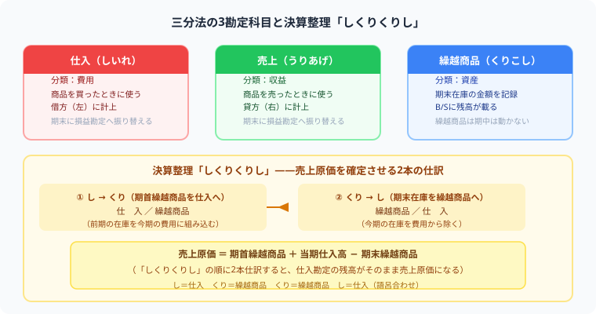

商品売買の仕訳（三分法）
仕入・売上・繰越商品を図解で完全解説
- 三分法は「仕入・売上・繰越商品」の3勘定で商品売買を記録する——売ったときに利益を直接計算しないのがポイント
- 仕入は借方・売上は貸方——常にこの方向で記録する（反対にはならない）
- 売上原価は決算整理でまとめて計算——「しくりくりし」の仕訳が出来ればOK
- 返品・仕入諸掛り・分記法との違いまで押さえれば試験対策は完璧
こんにちは、大谷です！初めて「三分法」を習ったとき、僕は本気で「なんじゃこりゃ……！」となりました。だって、商品を売ったその瞬間に儲けを計算しないんですよ？仕入は費用として記録するだけ、売上は収益として記録するだけ。利益はどこにも出てこない。おまけに決算になったら「しくりくりし」なんて謎の呪文まで飛び出してきて、頭が完全に置いてけぼりになりました（笑）。
でもこれ、正体がわかれば「儲けの計算を、期末に一気にまとめてやる」というシンプルな仕組みだったんです。その"儲けを後回しにする理由"に気づいた瞬間、一気に霧が晴れました。今日は僕がつまずいたポイントをそのまま攻略法に変換して、仕入・売上・繰越商品の3勘定を一気に整理します！
簿記3級の取引の大半は「商品を仕入れて売る」です。この仕訳を正確に書けるかどうかが、合否に直結します。三分法は仕入・売上・繰越商品の3つの勘定を使う、最も基本的な商品売買の記録方法です。
📦 三分法の3つの勘定科目——仕入・売上・繰越商品はそれぞれ何の要素？

三分法では商品取引に仕入・売上・繰越商品の3つを使い分けます。決算時の「しくりくりし」で売上原価が確定します。
📝 ① 商品を仕入れたときの仕訳——「仕入（費用）」を借方に記録する
商品 ¥50,000 を現金で仕入れた。
商品を買うと「仕入」（費用）が増えます。支払い方法（現金・当座預金・買掛金など）によって貸方が変わるだけで、借方は必ず「仕入」です。
💰 ② 商品を売ったときの仕訳——「売上（収益）」を貸方に記録する
原価 ¥50,000 の商品を ¥80,000 で現金販売した。
原価 ¥50,000 ではなく、お客さんから受け取る金額 ¥80,000 で仕訳します。原価と売価の差 ¥30,000 が利益（売上総利益）になります。
🔄 ③ 返品・値引きの仕訳——仕入返品と売上返品はどちらも「逆の仕訳」で処理する
返品・値引きは最初の仕訳を「逆に戻す」イメージ。仕入れたものを戻したら仕入を減らし、売ったものが戻ってきたら売上を減らします。
✏️ ④ 決算整理：繰越商品の仕訳——「しくりくりし」で売上原価を確定させる
期末に売れ残った商品（在庫）を「繰越商品」として翌期に引き継ぎます。決算整理仕訳は2ステップです。
売上原価 ＝ 期首商品 ＋ 当期仕入高 − 期末商品
例）10,000 ＋ 200,000 − 15,000 ＝ 195,000
❓ ⑤ 三分法 vs 分記法——簿記3級の試験で出るのはどっち？
商品売買の記帳方法には「三分法」と「分記法」の2種類がありますが、日商簿記3級の試験で使うのは三分法のみです。分記法は参考知識として押さえておきましょう。
仕入・売上・繰越商品の3勘定を使う。売上総利益は期末に自動計算。
商品・商品売買益の2勘定を使う。売却のたびに利益が確定する。
分記法は「第6章：固定資産の売却」で似た考え方が登場します。ここでは「三分法が3級のスタンダード」とだけ覚えておけばOKです。
🚚 ⑥ 仕入諸掛り（付随費用の処理）——運賃は「当社負担」か「先方負担」かで仕訳が変わる
商品の売買に伴う送料などの諸経費（諸掛り）は、誰が負担するかで処理が変わります。
当社負担の場合——仕入原価に含める
・売上時の諸掛り→「発送費」で別建て（仕入には合算しない）
・仕入時の諸掛り→「仕入」勘定に合算（発送費は使わない）
同じ諸経費でも、売上側と仕入側で処理が真逆！
先方負担の場合——立替金（資産）として記録する
仕入先が負担すべき送料は、自分（当社）の費用にはなりません。立替金（資産）として記録し、後で仕入先から回収します。
📋 まとめ：三分法 早見表
ここまで読んでくれて本当にありがとうございます！この記事が少しでも役に立ったら、僕の毎日の執筆モチベーション維持のために、この下にある【いいねボタン】をポチッと押してもらえると、めちゃくちゃ嬉しいです！